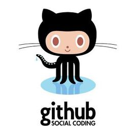

标准盒子模型
怪异盒子模型
弹性盒模型
column分栏

如前所述，作为一个分布式的版本控制系统，在Git中并不存在主库这样的概念，每一份复制出的库都可以独立使用，任何两个库之间的不一致之处都可以进行合并。
GitHub可以托管各种git库，并提供一个web界面，但与其它像 SourceForge或Google Code这样的服务不同，GitHub的独特卖点在于从另外一个项目进行分支的简易性。为一个项目贡献代码非常简单：首先点击项目站点的“fork”的按钮，然后将代码检出并将修改加入到刚才分出的代码库中，最后通过内建的“pull request”机制向项目负责人申请代码合并。已经有人将GitHub称为代码玩家的MySpace。
在GitHub进行分支就像在Myspace（或Facebook…）进行交友一样，在社会关系图的节点中不断的连线。
GitHub项目本身自然而然的也在GitHub上进行托管，只不过在一个私
有的，公共视图不可见的库中。开源项目可以免费托管，但私有库则并不如此。Chris Wanstrath，GitHub的开发者之一，肯定了通过付费的私有库来在财务上支持免费库的托管这一计划。
是的，我们正是这么计划的。通过与客户的接洽，开发FamSpam，甚至是开发GitHub本身，GitHub的私有库已经被证明了物有所值。任何希望节省时间并希望和团队其它成员一样远离页面频繁转换之苦的人士都会从GitHub中获得他们真正想要的价值。
在GitHub，用户可以十分轻易地找到海量的开源代码。
水平分栏
垂直分栏
排序